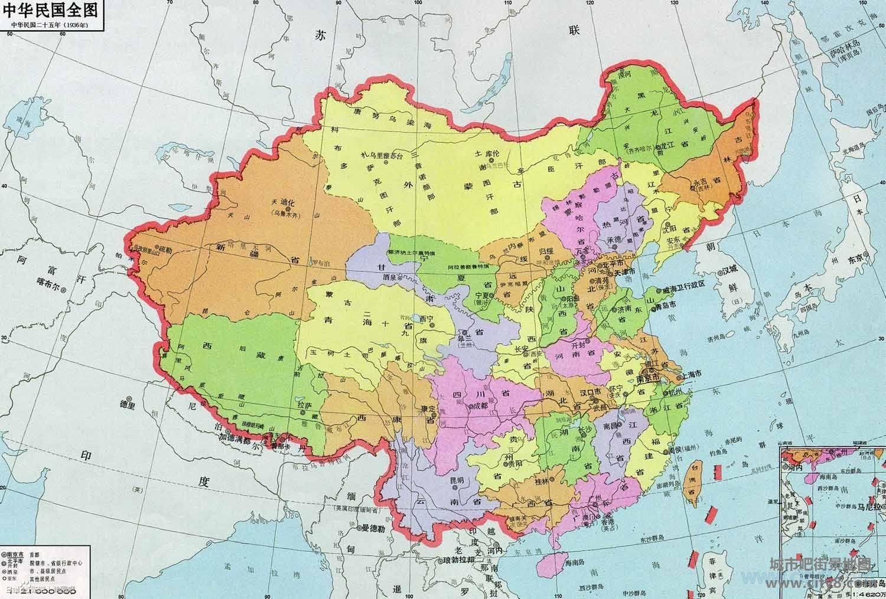

3 / 9 possibilities
ROC people in the great China region!
Taiwanese are still Taiwanese wherever they go, and they are discriminated against everywhere, especially in mainland China. Because of the prevailing xenophobia, they are extremely unwelcome to Taiwanese. ──Wu Zhuoliu (1977)
Your definition of Taiwanese is people who live in the great China area defined by the 1992 Consensus between semiofficial the China Communist Party and the Republic of China (ROC) Taiwanese government. The idea is drawn upon the "One China Policy" and the consensus is "one China, different interpretations" in which both China Communist and ROC both agreed that there is only one China (including Taiwan) after the nation is divided after the Civil War.
However, the Consensus was rejected by the majority of people and the current Taiwanese government led by President Tsai Ing-wen, since most of them resist the Chinese Unification. The idea is also very much only based on what ROC views Taiwan, which often neglects the subjectivity of Taiwan as an island with its own historical context and doesn't take the indigenous people's agency into consideration, many of who do not consider themselves as Chinese or agree that Taiwan is part of the great China region.